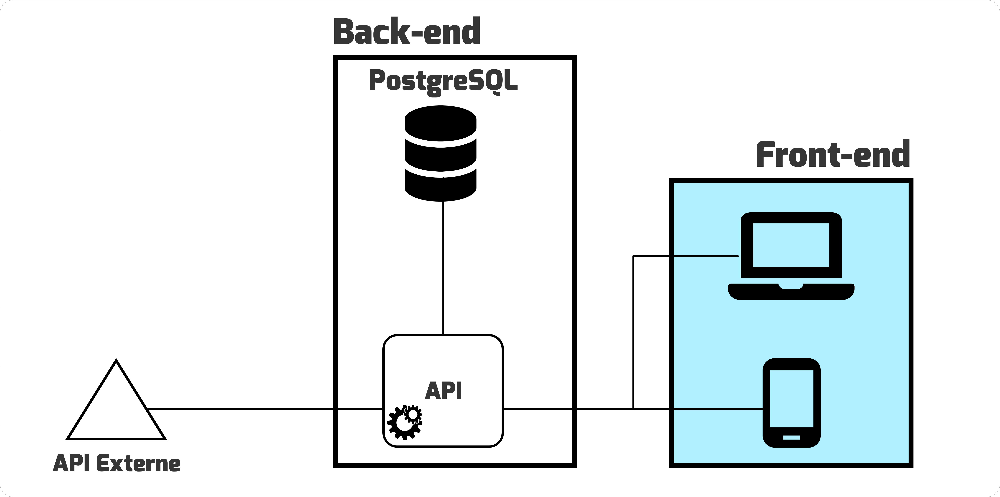

<div class="sscovid">
    <div class="content">
        <span class="title"><fa-icon [icon]="faBackward"></fa-icon>Retour</span>


        <div class="description">
            
            <span class="description-title">Description</span>
            <span><strong>SSCOVID19</strong> est une application web multilingue ( anglais, français ) que j'ai créé dans le but de rejoindre activement la lutte contre l'évolution de la covid-19 dans le monde en permettant à la terre entière de rester informée sur l'évolution du virus.</span>
            <span>Elle prend en compte les données de plus de 215 pays et permet: </span>
                <ul>
                    <li>de consulter les chiffres totaux mondiaux</li>
                    <li>de consulter les chiffres par pays et par continent</li>
                    <li>de visualiser les graphes d'évolution de la maladie et les graphes d'évolution des vaccinations dans le temps ( depuis janvier 2020 ) dans le monde et par pays</li>
                    <li>de visualiser la carte du monde avec des indicateurs de couleur suivant la gravité des cas dans différents pays</li>
                    <li>de rester à jour sur les faits d'actualité de cette pandémie </li>
                </ul>

                <button>Visitez le site</button>
        </div>

        <div class="organisation">
            <span class="organisation-title">Organisation</span>
            <span class="organisation-subtitle">1) Analyse des solutions existantes</span>
            <div class="organisation-first-step">
                <span> Je suis parti du principe que je voulais une solution simple et facile d'utilisation. J'ai donc inspecter des applications et sites web qui présentaient également des données sur la pandémie.  </span>
                <span>Fort a été de constater que:</span>
                <ul>
                    <li>Plusieurs sites web mettaient beaucoup plus en avant, les informations des pays originaires des développeurs</li>
                    <li>Plusieurs d'entre eux présentaient des données qui prennent beaucoup de temps à être chargées</li>
                    <li>Sur certains, il y avait un affichage massif d'information et des résultats contenant des termes statistiques pas facilement accessibles à un utilisateur lambda</li>
                </ul>
                <span>Je me suis donc proposé de développer une solution en prenant en compte les points cités plus haut.</span>
            </div>
            <span class="organisation-subtitle">2) Réalisation des maquettes</span>
            <span>J'ai réalisé les interfaces utilisateurs avec Adobe XD</span>
            <span class="organisation-subtitle">3) Définition de l'architecture et choix des technologies</span>
            
            <span class="organisation-subtitle">4) Développement back-end</span>
            <ul>
                <li>création et connexion de la base de données</li>
                <li>récupération des données brutes de l'API externe desease.sh pour un stockage spécifique </li>
                <li>création des endpoints d'exposition de l'API</li>
            </ul>
            <span class="organisation-subtitle">5) Développement Front-end</span>
            <ul>
                <li>intégration des maquettes et SEO on page</li>
                <li>Responsive design</li>
                <li>ajout de google analytics en vue de monitorer le comportement des visiteurs </li>
            </ul>
            <span class="organisation-subtitle">6) Mise en production</span>
            <ul>
                <li>hébergement du back-end sur heoku</li>
                <li>achat du nom de domaine sscovid19.com</li>
                <li>hébergement du front-end sur hostinger</li>
            </ul>

        </div>

    </div>
</div>